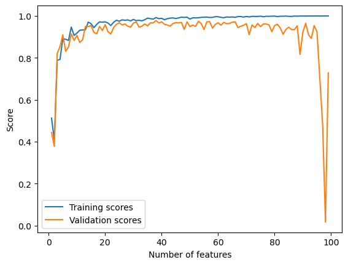
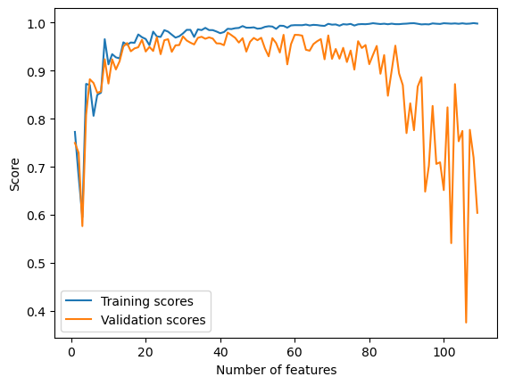

self.w = np.linalg.inv(X_.T@X_)@X_.T@yLinear Regression
Implementing linear regression in two ways
1. Analytical formula for \(\hat{w}\)
The first way to implement linear regression is by using the analytical formula that gives us the \(\hat{w}\) to minimize \(L(w)\):
2. Gradient descent
We could also use the regular gradient descent to compute \(\hat{w}\). To reduce time complexity, we precompute P = X_.T@X and q = X.T@y, and then pass them to gradient() in the for-loop where we update the gradient:
self.w -= 2*alpha*self.gradient(P, q, self.w)Experiments
Increasing the number of features
In this experiment, I explore how the training score and validation score change as the number of features increases.
from linear_regression import LinearRegression
from matplotlib import pyplot as plt
import numpy as np
# functions for data generation
def pad(X):
return np.append(X, np.ones((X.shape[0], 1)), 1)
def LR_data(n_train = 100, n_val = 100, p_features = 1, noise = .1, w = None):
if w is None:
w = np.random.rand(p_features + 1) + .2
X_train = np.random.rand(n_train, p_features)
y_train = pad(X_train)@w + noise*np.random.randn(n_train)
X_val = np.random.rand(n_val, p_features)
y_val = pad(X_val)@w + noise*np.random.randn(n_val)
return X_train, y_train, X_val, y_valI increase the number of features used in the model from 1 to n_train-1 and plot the change in training and validation scores.
# generate data
n_train = 100
n_val = 100
noise = 0.2
train_scores = []
val_scores = []
# increase p_features from 1 to n_train-1 and calculate training and validation scores for each
for p_features in np.arange(1, n_train):
# create data
X_train, y_train, X_val, y_val = LR_data(n_train, n_val, p_features, noise)
LR = LinearRegression()
LR.fit(X_train, y_train)
train_scores.append(LR.score(X_train, y_train))
val_scores.append(LR.score(X_val, y_val))
# plot
plt.plot(np.arange(1, n_train), train_scores, label = "Training scores")
# plot
plt.plot(np.arange(1, n_train), val_scores, label = "Validation scores")
xlab = plt.xlabel("Number of features")
ylab = plt.ylabel("Score")
legend = plt.legend() 
We can observe from the chart that the training score increased all the way to 1.0 as the number of features increases. The validation score, however, has been fluctuating and forms a slightly downward trend, and dramatically decreased to almost 0 when the number of features reached ~99.
This is a demonstration of overfitting. With too many features, the model becomes increasingly accurate in describing the trend in the training data, but at the same time takes into account more noise from the training data that doesn’t generate to the rest of the data. As a result, validation scores decrease.
LASSO regularization
To fix overfitting, I experiment with LASSO regularization:
from sklearn.linear_model import Lasso
# generate data
n_train = 100
n_val = 100
noise = 0.2
train_scores = []
val_scores = []
# increase p_features from 1 to n_train-1 and calculate training and validation scores for each
for p_features in np.arange(1, n_train + 10):
# create data
X_train, y_train, X_val, y_val = LR_data(n_train, n_val, p_features, noise)
L = Lasso(alpha = 0.001)
L.fit(X_train, y_train)
train_scores.append(L.score(X_train, y_train))
val_scores.append(L.score(X_val, y_val))
# plot
plt.plot(np.arange(1, n_train + 10), train_scores, label = "Training scores")
plt.plot(np.arange(1, n_train + 10), val_scores, label = "Validation scores")
xlab = plt.xlabel("Number of features")
ylab = plt.ylabel("Score")
legend = plt.legend() 
Using LASSO regularization, the validation scores still drops as the number of features increases, but there is no dramatical decrease as the number of features approaches, or even exceeds the number of data points. This is because LASSO is able to force entries of the weight vector to zero, which can help eliminate the effect of features that act as noise to the model.